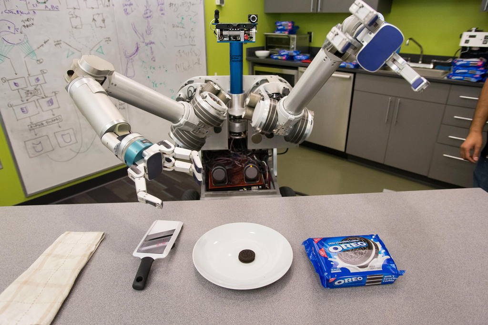
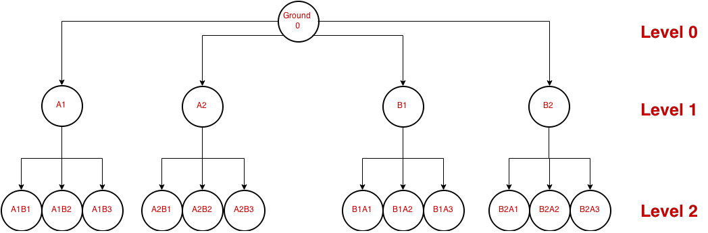
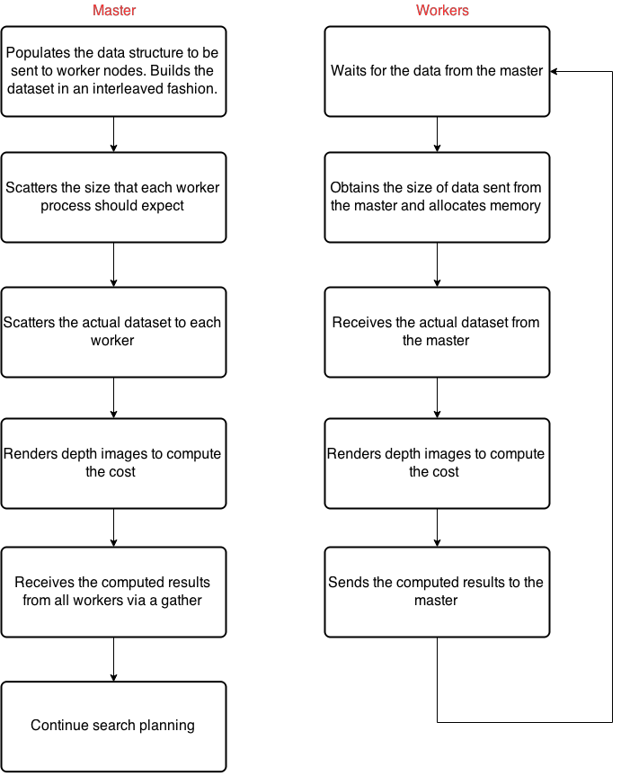
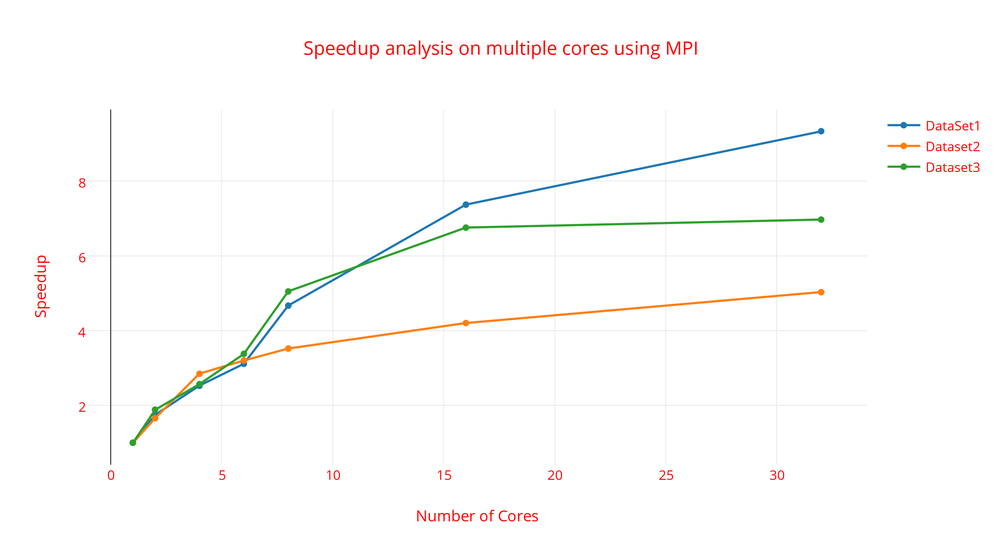
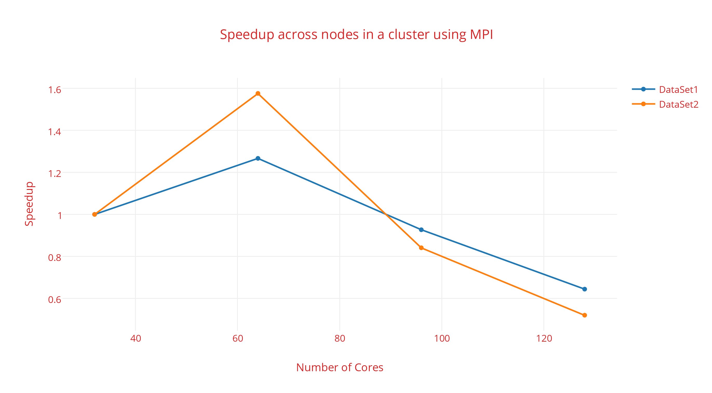

Final Writeup
Summary:
We have implemented a parallel algorithm to localize objects in an image using MPI over multiple cores and cluster and have obtained 9x speedup using 32 cores on Intel Xeon E5-2680v2 on AWS.
We intend to prove our results by speedup graphs using variable number of computation units on a single machine and across multiple nodes in a cluster, in comparison with the serial version of the code. Our implementation involved designing a scalable framework across multiple cores on AWS using MPI. We further ported the framework to work across a cluster of nodes on AWS. Further improvisations also include OpenMP within each MPI worker process.
We claim that we cannot put enough compute capability on a robot to exploit a greater degree of parallelism. Hence there is a need to perform the computations offline and send the results back to the robot. Our parallel rendering version has reduced the localization time for an image with 3 objects from about 280 seconds to less than 30 seconds which seems to fit well for the applications intended.
Background:
Our project mainly tries to address the ongoing research on object localization at Carnegie Mellon University, Search Based Planning Laboratory (SBPL). One of the chief applications of object localization is to enable robots to identify objects in a given scene accurately and efficiently.

Let's say HERB above wants to pick up the oreo on the plate. He first needs to identify the oreo amongst all the other objects in front of him and also he needs to be able to do this quickly. Some of the industrial robotic applications are involved in incorporating this feature to any mobile manipulator that needs to recognize and localize objects like the Amazon Kiva Robots.
Baseline Algorithm:
We use search-based planning algorithm intended to minimize number of 'simulations' based on dynamic program of cost. The state expansions and the algorithm is described below:

We have different expansion states represented by a Directed Acyclic Graph. Each node in the graph describes a given configuration of an object (or objects) in the given scene. The search based expansion of the states of the objects follow the pattern:
- We start off with an empty image without any objects involved at ground 0.
- We then go on to compute all possible configurations (x, y and theta) of taking 1 object at a time which brings us to Level1 of the search. As seen above, if we have objects A and B, we generate all possible configs of A (A1, A2 …..) and also that of B (B1, B2 ….).
- We combine all the configs of a given level to generate a state for that level which aggregates all the object ids and their respective positions.
- We would compute the cost of each these states and only involve states which fall within the cost threshold for the computations of successive states in the next level.
- Next, we fix a config for one object and go on to involve another object with it and generate all possible configs for these 2 objects. In the figure above, we first fix A1 and involve object B and generate all possible states (A1B1, A1B2, A1B3). Then we do the same fixing for A2, B1 and B2 and so on. This constitutes Level 2.
- Repeat the above algorithm for levels beyond until we have included all the objects and reached our convergence. The animation below shows the different phases of the state expansion algorithm described.

Input and Output:
Input to our analysis consists of a depth image taken from a Kinect sensor along with the number of objects in the given input scene and the universal set of 3D models of “all” possible objects in our database. The system analyzes the input image via a graph search algorithm and produces all orientations of all combinations of the objects in the input image and compares it with the existing database to identify them. The output consists of the identity of each object in the input image and its localized position within the image.
The most computationally intensive part of the algorithm involved rendering an image to calculate the cost metric of each possible configuration of the objects. However, most of this computations is parallelizable though they have dependencies. The algorithm exposes a lot of data level parallelism as the computation at each node can be done independently.
Platform:
The platform consists of an environment with Robot Operating System (ROS) which is used extensively for compilation and execution. OpenGL and Point Cloud Library (PCL) are used in rendering images. Amazon Web Services (AWS) is used to provide us with the multicore and cluster infrastructure.
Approach:
Each node in the DAG shown, performs rendering and computes the cost. Cost is the number of pixels of the generated image that are identifiable by the observed image. Lesser the cost, better it is. If the cost lies within a certain threshold, we consider going down the tree or else we ignore that particular configuration.
Initial profiling: The code takes a total of 284s to localize an image with 3 objects and out of which time spent on image rendering and computation of cost alone takes 269s for all the nodes. Thus, parallelizing these could result in good performance benefits.
The question now comes is what form of parallelism should we use? We have the following options:
-
Within a core:
- SIMD: Helpful if repeated arithmetic computations, which is not in our case.
- Multi-threading: As we have talked that OpenGL is used for rendering, it does not support or rather no benefit can be obtained when running it from multiple threads.
- Across cores:
- OpenMP: For the same reason that OpenGL context is thread specific, we do not find this feasible.
- MPI: Message passing seems most apt as it provides enough flexibility across cores and over the cluster to leverage the parallelism present.
Therefore, we decided to parallelize the system with MPI.
System Design:
Stating an example of a robot trying to localize a set of objects, it sends the image to the cloud, in our case AWS. We configured AWS to have master and slave configuration, running on multiple cores and cluster configurations with MPI framework. It is expected to run the search algorithm and return the object id with their respective co-ordinates as soon as possible.

But depencies thwart parallelism, some of which we mainly addressed are:
- Kd Tree: PCL uses a Kd tree which is shared amongst all the nodes for their cost metric computation. So we made each process creates its local copy of the Kd tree and hence removing its dependency.
- Hashmap: A hashmap to reduce the amount of computations was implemented for already computed elements and it is shared by all the nodes. Therefore, in the parallel version we made sure that computations involving hashmap have been de-coupled and is handled only by the master process.
- Kinect simulator object: Each image rendering requires an independent kinect simulator object. We handle this by making each process create their own object.
Work Distribution:
Now that dependencies have been removed, we reason about the ways to distribute the work. Below is the graph representing execution time for each successor state at different levels. Since at level 1 all images, lets say a mug, a jug and a cup, are rendered in all possible configurations, the rendering time for this large jug could be much larger than the small mug. Therefore, as expected, we see high rendering time initially as it involved the rendering of the large jug. Towards higher successor ids, the rendering time is much lesser as it only has to deal with the rendering of the small cup.

Thus, in-order to maintain good load balance, we assign the work to slaves in an interleaved manner.
Master-Slave Implementation:

Master node scatters the dataset to each worker:
/**
* [EnvObjectRecognition::DataScatter description] Master node scatters the
* actual data to all workers
*
* @param sendbuf [description] Data buffer used by master
* to send data
*
* @param getbuf [description] Data buffer used by workers
* to receive data
*
* @param expected_count [description] size of data sent to each
* client from master
*/
void EnvObjectRecognition::DataScatter(SendMsg* sendbuf, SendMsg* getbuf, int expected_count) {
//first create a MPI_Datatype as MPI does not support derived data types
int nitems = NUM_ELEMS;
int blocklengths[NUM_ELEMS] = {NUM_MODELS, NUM_MODELS*3, NUM_MODELS*3,
NUM_MODELS, NUM_MODELS*3, NUM_MODELS*3, 1, 1, 1};
MPI_Datatype types[NUM_ELEMNS] = {MPI_INT, MPI_INT, MPI_DOUBLE, MPI_INT, MPI_INT, MPI_DOUBLE,
MPI_INT, MPI_INT, MPI_INT};
MPI_Datatype mpi_sendbuf;
MPI_Aint offset[NUM_ELEMS];
offset[0] = offsetof(SendMsg, source_ids);
offset[1] = offsetof(SendMsg, source_disc);
offset[2] = offsetof(SendMsg, source_pose);
offset[3] = offsetof(SendMsg, cand_ids);
offset[4] = offsetof(SendMsg, cand_disc);
offset[5] = offsetof(SendMsg, cand_pose);
offset[6] = offsetof(SendMsg, source_id);
offset[7] = offsetof(SendMsg, cand_id);
offset[8] = offsetof(SendMsg, valid);
//create the derived data type
MPI_Type_create_struct(nitems, blocklengths, offset, types, &mpi_sendbuf);
MPI_Type_commit(&mpi_sendbuf);
//scatter the data
MPI_Scatter(sendbuf, expected_count, mpi_sendbuf,
getbuf, expected_count, mpi_sendbuf, 0, MPI_COMM_WORLD);
}
Master node gathers results from workers:
/**
* [EnvObjectRecognition::DataGather description] Master node gathers the
* results from all workers
*
* @param recvbuf [description] Buffer each worker uses to send data
* @param getresult [description] Buffer the master node uses to gather data
* @param expected_count [description] Size of data sent by each worker
*/
void EnvObjectRecognition::DataGather(RecvMsg* recvbuf, RecvMsg* getresult, int expected_count) {
int nitems = RECV_ELEMS;
int blocklengths[RECV_ELEMS] = {NUM_MODELS, NUM_MODELS*3, NUM_MODELS*3, 1, 1, 1, 1};
MPI_Datatype types[RECV_ELEMS] = {MPI_INT, MPI_INT, MPI_DOUBLE, MPI_UNSIGNED_SHORT,
MPI_UNSIGNED_SHORT, MPI_INT, MPI_INT};
MPI_Datatype mpi_recvbuf;
MPI_Aint offset[RECV_ELEMS];
offset[0] = offsetof(RecvMsg, child_ids);
offset[1] = offsetof(RecvMsg, child_disc);
offset[2] = offsetof(RecvMsg, child_pose);
offset[3] = offsetof(RecvMsg, last_min_depth);
offset[4] = offsetof(RecvMsg, last_max_depth);
offset[5] = offsetof(RecvMsg, cost);
offset[6] = offsetof(RecvMsg, valid);
MPI_Type_create_struct(nitems, blocklengths, offset, types, &mpi_recvbuf);
MPI_Type_commit(&mpi_recvbuf);
MPI_Gather(recvbuf, expected_count, mpi_recvbuf,
getresult, expected_count, mpi_recvbuf, 0, MPI_COMM_WORLD);
}
Challenges we faced:
- ROS which we use extensively for building and running has advantages but requires Ubuntu. Hence we could not use GHC machines and latedays.
- OpenGL version support of 2.0+ is a requirement. It required us a great deal of work to find the right drivers and update the versions to enable it on AWS instances.
- Integrating MPI with ROS, was a non-trivial work. We had a lot of issues with linking library and creating CMakeList file.
- ROS + MPI was also a hindrance when we moved to a cluster. We saw some uncharacteristic behaviors of MPI which required us to store our binary on each of the worker nodes before execution.
Result:
We ran our implementation on a 32 core Intel Xeon E5-2680v2 on AWS. In the graph below, the X-axis signifies number of cores and Y-axis is the speedup achieved for three datasets having three different images each. As expected we see increase in speedup as more cores are used (max 32 in this case). The reason we do not expect and see a linear speedup is due to the fact that parallelism is only available level-wise. This is done in-order to achieve the merits of dynamic programing involved in the computation of cost.
In the initial levels, the candidate size will be low, therefore, lesser parallelism. As we go further go down the DAG, the size of candidates to be rendered increases, therefore higher parallelism could be exploited.

OpenMP:
The current master-worker sections of the code computes many iterations. It prepares, sends and receives the data in a derived format, as MPI by default do not support derived data types. Again, all this data is independent of each other and can be handled separately. A simple way to achieve this was to use the OpenMP framework within each master and worker nodes to parallelize the loops involved in the computations. This did give us appreciable improvement in timing which is recorded below.
#pragma omp parallel for
for(unsigned int ii = 0; ii < size; ++ii)
SendbufPopulate(&tempbuf[ii], source_state, candidate_succs[ii], source_state_id, candidate_succ_ids[ii]);
We have tabulated the results of running plain MPI and also the MPI implementation with OpenMP.
Number of Cores |
Plain MPI execution time in seconds |
OpenMP + MPI execution time in seconds |
1 |
439 |
414 |
2 |
233 |
202 |
4 |
171 |
155 |
6 |
130 |
118 |
8 |
87 |
64 |
16 |
65 |
55 |
32 |
63 |
58 |
Cluster Configuration:
The graph below shows the speedup when using 1, 2 , 3 and 4 Intel Xeon E5-2680v2 machines in an AWS cluster. We scaled the single machine configuration across different nodes and observed higher speedup when using 2 machines. The speedup dropped when using 3 or 4 machines, which we speculate that as the work set handled by each worker reduces the communication overhead becomes significant.

How do we decide what type of machine to use, CPU or GPU based?
Profiling results showed that hardware rendering is almost 7x faster. However, it is generally the case that we have many more CPUs than GPUs. Let’s assume we have Np CPUs and Ng GPUs and time taken to render an image by each is Tp and Tg respectively, then CPU should be better than GPU if,
So, if the system has 8 cores and 1 GPU, hardware rendering need to be at least 8x better than the software rendering to be a favorable choice.
References:
The project was in collaboration with Search-based Planning Laboratory (SBPL) at Robotics Institute, Carnegie Mellon. We would like to thank Venkat Narayanan, who helped us with all issues related to the infrastructure of the starter code. We hope this would be of great help to them!Source code: Since the research is ongoing, we cannot make the source code public.